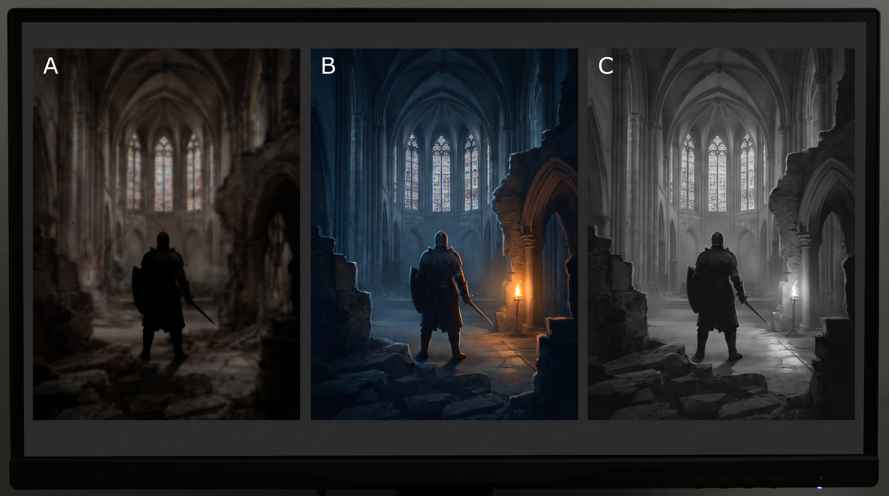

游戏里的"暗"不是插画里的"暗"——它必须同时满足三条工程约束，否则再好看也不能用
这里进入三层模型的第 3 层：应用方向要素。游戏画面不只供观看，还要让玩家找到路径、辨认威胁、判断距离。暗黑插画可以让观众迷失；游戏画面让玩家迷失，就是用途失败。工程评审因此先查下面三条约束。
物理根源是显示端的黑不是黑：典型 IPS 对比度约 1000:1，明亮房间还会把黑位抬起。校色屏上隐约可见的暗部，到玩家设备上可能整片消失；工程上应检查可用动态范围，而不是宣称"我画了细节"。
专业做法只有三个，全部都要写进提示词：
把图缩到 10% 或眯眼看；若仍能指出主体、路径与威胁，可读性才过关。再将饱和度降到 −100：灰度版若糊成一团，说明层次只靠色彩，在暗场里等于没有层次。
铁律是：把角色填成纯黑，仍应辨认出身份。逆光、远景、运动与特效遮挡都会把角色压成轮廓。辨识度来自三处：独特的外轮廓凸起（角、不对称肩甲）、比例反差（长臂短腿）与负形（如手臂和躯干间的空隙）；手臂贴身会把剪影粘成实心团块。
写进提示词的方式不是形容"很酷"，而是直接下达剪影指令：
strong readable silhouette, distinct asymmetric shoulder profile, negative space between the arms and the torso, the shape remains identifiable when filled with solid black
"脏"是暗黑美术最常见的失败，它有两个明确的技术成因：
解法是暗部保留统一色相。暗部并非"没有光"，而由天空、地面反射与间接照明填充：户外阴影常偏蓝，暖烛主光下相对偏冷，火堆旁也可因地面反射而偏暖褐。选一种暗部色相贯彻到底，画面才会从"脏"变成"沉"。
| 失败症状 | 技术成因 | 提示词处方 |
|---|---|---|
| 暗部糊成黑洞 | 暗部无环境光填充 | shadows lifted with cool ambient bounce, no crushed blacks, detail retained in the darks |
| 整张图灰扑扑 | 缺高光锚点，动态范围没拉开 | one small area of near-white specular as the brightest anchor point |
| 颜色像泥 | 暗部色相混乱 | unified cool blue-grey shadow hue throughout（或 warm umber shadows，二选一） |
| 主体和背景粘一起 | 无图底分离 | rim light separating the subject from the background |

Doré 的地狱版画、Barlowe 的有机地貌、Giger 的生物机械与洛夫克拉夫特修辞共享一个内核：恐怖来自认知失败，而不只是吓人的形体。
身体恐怖（body horror）的机制是违反身体图式——观众对"人体应该长什么样"有一套根深蒂固的预期，破坏它会触发生理性的不适。但这里有一条实用的分寸线：越是保留了大量正常特征、只在局部出错的形象，越恐怖。一个彻底变成怪物的东西只是"怪物"，而一张正常的脸上多了一只位置错误的眼睛，才让人后背发凉——这是恐怖谷效应的同一机制。
所以提示词的写法不是堆砌 horror, gore, terrifying（这类评价词和第 1 章批判的空泛质量词是同一个毛病：不携带画面信息，而且会被安全策略拦截），而是精确地指定"错在哪一处"：
a humanoid figure whose proportions are correct except that the arms have one extra joint, the elbow bending the wrong way, skin texture continuous and healthy over the deformity
最后一句 skin texture continuous and healthy 是关键：它禁止模型把畸变画成伤口或血肉，而是画成"它本来就长这样"。健康的畸形比受伤的畸形恐怖得多。
洛夫克拉夫特描述拉莱耶时反复用"角度是错的"。这在画面上是可执行的——它对应的是透视系统的自我矛盾：多个消失点互相冲突、楼梯首尾相接、水平面同时朝两个方向倾斜。这套语言在艺术史上有现成的锚点：埃舍尔（M. C. Escher）的不可能构造，以及 Piranesi 的《想象的监狱》（Carceri）——后者是巨大幽暗的拱廊、无处通向的阶梯、尺度失控的内部空间，几乎是所有地牢概念图的祖先。指称它们比描述"诡异的空间"有效得多。
impossible architecture in the manner of Piranesi's Carceri, staircases that connect back into themselves, two conflicting vanishing points within the same room, the floor plane tilting in two directions at once
这是本节最重要的一条方法。"不可名状"是一个语言学状态，不是一个形状——你没法直接画出"无法被描述的东西"，因为一旦画出来它就被描述了。洛夫克拉夫特自己的解法是：不写整体，只写局部特写 + 观看者的生理反应。这个方法可以一比一搬到提示词里：
a vast subterranean cavern with an altar of fused bone and rusted iron, a colossal form mostly submerged in shadow, only a section of its surface lit — smooth wet hide covered with dozens of anatomically ordinary human eyes, a single small human figure at the lower left recoiling, back to camera, low warm firelight from below at the left edge, 2000K, hard-edged and flickering, deep cool blue-grey ambient fill in the shadows, no crushed blacks, wet subsurface sheen on the organic surfaces, corroded metal with orange oxide crust, in the manner of Zdzisław Beksiński and Wayne Barlowe, digital matte painting, 24mm wide angle, f/5.6, low camera angle looking up, environment concept art, horizontal composition with the creature off-center
模型：MJ v8.1 · 画幅 21:9 · --stylize 250 · 无负面词
| 段落 | 在做什么决定 |
|---|---|
only a section of its surface lit | 执行"只给局部"——这是整条提示词的核心，删掉它画面立刻退化成普通怪兽图 |
dozens of anatomically ordinary human eyes | 细节可辨识、组合不可归类。注意 ordinary 这个词，它禁止模型把眼睛画成发光的红球 |
a single small human figure ... recoiling | 尺度参照 + 观者反应，一句话干两件事 |
2000K, hard-edged and flickering | 火光的实际色温与光质（第 5 章）。硬边阴影是关键，它让暗部边界锋利而不是糊开 |
cool blue-grey ambient fill | 约束三：暗部保留色相，且与 2000K 暖主光形成冷暖分离 |
low camera angle looking up | 仰角赋予对象压迫性——这条会在第 21 章展开成完整的视角权力语法 |
1. 全都亮着。模型的默认倾向是把主体照亮展示——你不显式限制受光面积，它就会给你一只在打光棚里摆姿势的怪兽。对策是把"哪里亮"写死：only the left third of the creature receives light, the rest falls into unlit darkness。
2. 触手堆砌。tentacles, eldritch, cosmic horror 这三个词现在是模型里最陈词滥调的簇之一，会稳定产出同一只章鱼脸。要避开它，就不要用类别词，只写具体的错误——关节多了一节、对称性偏了几度、材质属于另一个物种。
"哥特"是全书里最容易写坏的风格词之一，因为它同时指向三个不相干的东西：中世纪的哥特式建筑（12–16 世纪）、19 世纪的哥特复兴与哥特小说、以及 20 世纪 80 年代之后的哥特亚文化（黑衣、银饰、厚底靴）。你只写 gothic，模型会把三者搅在一起给你一个平均值。正确做法是指称具体的构件与年代。
| 构件 | 英文 | 它解决的结构问题 | 画面上的可辨识特征 |
|---|---|---|---|
| 尖拱 | pointed arch | 把推力更多地引向垂直方向，可以造得更高更窄 | 拱顶是尖的而非半圆（半圆是罗马式，这是区分两者最快的一眼） |
| 肋架拱顶 | ribbed vault | 用石肋承担骨架荷载，肋间填充可以做薄 | 抬头看穹顶，是一张交叉的石骨架网 |
| 飞扶壁 | flying buttress | 把侧推力越过侧廊传到外部墩柱 | 建筑外部斜跨出去的一排石桥，是哥特教堂的外部剪影特征 |
| 玫瑰窗 | rose window, tracery | 墙体承重减轻后腾出的巨大开口 | 放射对称的圆形花窗 + 石制窗花格 |
这四件事在结构上是一条因果链：尖拱与肋架拱顶让墙不再需要那么厚 → 飞扶壁把推力接管出去 → 墙上就能开巨大的窗。哥特教堂那种"石头变轻了、光变多了"的观感，来源就在这里。知道这条链，你写提示词时才不会把飞扶壁画进室内（常见错误）。
19 世纪的哥特复兴给了我们今天大部分的"暗黑哥特"想象。服装侧的可用元素是具体的：高领与颈部装饰（stand collar、lace jabot、choker）、紧身胸衣与其外化（corset、boning 可见的结构线）、大量黑色羊毛与丝绸的哑光/高光对比、维多利亚丧服传统（mourning dress、黑纱 crape、jet 黑玉首饰）。最后这一条尤其有用——维多利亚时代的丧服是一整套有严格规范的服制，它比笼统的"黑裙子"能给出精确得多的画面。
雾把大气透视前移，让近中远景迅速分成明度台阶；它也是光路的显影介质，没有雾、尘或烟就看不见光柱。烛光约 1800–1900K，光源小所以阴影硬，照度又随距离平方衰减，因此天然产生局部暖亮与大片暗面。应写 single candle, 1900K, sharp shadow edges, brightness falling off within one meter。
the nave of an abandoned gothic cathedral, pointed arches and a ribbed stone vault overhead, a large rose window at the far end with broken tracery, a hooded figure in a victorian mourning dress with a high lace collar walking away from camera down the center aisle, cold moonlight entering through the rose window at 4100K as the key, a single candle in the figure's hand at 1900K as the local accent, thin fog making the light shafts visible, three clear depth planes, weathered limestone with lichen, matte black wool and crape veil against wet-looking jet beadwork, in the manner of 19th century gothic revival painting, 28mm, f/4, eye level, deep one-point perspective down the aisle, environment key art, vertical composition
模型：FLUX.2 · 画幅 2:3 · 无负面词
主体与环境逐项点名建筑构件；光段用 4100K 月光与 1900K 烛光形成冷暖、远近双重分离；材质段用哑光羊毛与高光黑玉的粗糙度反差表现"黑配黑"；最后两行才处理镜头与用途。三层各司其职。
这一节要处理一个反直觉的事实：真实的夜晚几乎是没有颜色的，而游戏和电影里的夜晚是蓝的。这两件事都对，中间隔着一整套生理学与产业惯例。搞清楚这条链，你才知道自己在提示词里该写哪一个。
人眼的视锥细胞（色觉）需要相当的光强才工作。当照度降到大约 0.01 lux 以下（无月的野外），视锥基本停摆，只剩视杆细胞在工作——而视杆只有一种感光色素，不能分辨颜色。所以真正的暗夜里，你看到的世界是灰的。这就是那句老话"猫在夜里都是灰的"的生理学版本。
在明视觉（视锥）与暗视觉（视杆）之间的过渡区（中间视觉，mesopic），有一个漂亮的现象：视杆细胞的光谱敏感峰值在约 507 nm（蓝绿），而视锥的峰值在约 555 nm（黄绿）。当光线变暗、感知逐渐从视锥转向视杆时，整体的敏感峰向短波长移动——结果是蓝色和青色显得相对更亮，红色显得格外暗沉。这就是浦肯野效应（Purkinje effect）。黄昏时分你会发现红色的花朵迅速变黑，而蓝色的花朵还亮着，就是它。
所以"夜晚偏蓝"不是错觉，也不是月光真的是蓝的——它是人眼在低照度下的响应曲线改变造成的相对亮度重排。
月光是月壤反射的太阳光，相关色温通常约 4000–4200K，比正午日光更暖。写实路线用 4100K moonlight, near-neutral；类型片路线用 cinematic blue night, 7000K key。二者都是选择，但不要把物理解释和影视惯例混为一谈。
产业侧的另一半原因是技术史。早期胶片感光度低，真正在夜里拍外景几乎不可能，于是发明了"白天拍夜戏"（day for night，法语 la nuit américaine）：在白天拍摄，大幅欠曝，黑白时代加红滤镜压暗天空、彩色时代改用蓝滤镜并在冲印时偏冷。它的产物就是我们今天认知里的"电影夜景"——蓝调、高对比、天空压得很暗、但物体上仍有清晰的方向性太阳光（因为那本来就是太阳光）。
这套语言之所以延续到数字时代和游戏里，是因为它解决了可读性问题：真实夜景太暗、太无差别，玩家看不清；蓝调夜景保留了方向光与明暗层次，看起来"像夜晚"却依然可读。它是一次为了功能而做的美学妥协，最后变成了约定俗成。
| 你要的夜 | 关键参数 | 提示词核心句 |
|---|---|---|
| 写实无月夜 | 近乎无彩、极低对比、仅剩剪影 | near-monochrome starlit night, almost no color saturation, forms reduced to silhouettes against a slightly brighter sky |
| 写实月夜 | 4100K 近中性、硬边阴影（月亮角直径小） | full moon as a hard small light source, 4100K, crisp shadow edges, very low overall luminance |
| 类型片蓝夜 | 7000–10000K 主光 + 暖光点缀 | day-for-night look, cold 8000K key from above, deep blue shadows, warm 2700K practical lights in windows |
| 城市夜（多光源） | 混合色温是主角 | mixed color temperatures: 2200K sodium street lamps, 6500K LED shopfronts, magenta neon reflections on wet asphalt |
a lone traveler with a lantern on a flooded country road at night, a dark treeline and a distant lit farmhouse on the horizon, cold 8000K moonlight from high camera right as the key, hard small source, crisp shadow edges, warm 2200K lantern light in the traveler's hand as the only warm accent, the wet road surface reflecting both light sources, sky retaining a faint deep indigo gradient near the horizon, shadows filled with desaturated blue, no crushed blacks, no pure black areas, grazing-angle mirror reflections on standing water, day-for-night cinematic treatment, 50mm, f/2.8, low eye level close to the water, game environment concept art, horizontal, subject at the left third
模型：Seedream 5 · 画幅 16:9 · 无负面词
三条约束逐项落地：2200K 暖灯在 8000K 冷背景中充当视觉锚点，远处农舍灯指路；人物和树线以靛蓝天空衬出剪影；暗部统一为低饱和蓝且不压死。积水的掠射角镜面反射则应用第 6 章菲涅尔知识，把光源复制到地面以扩充亮度层次。